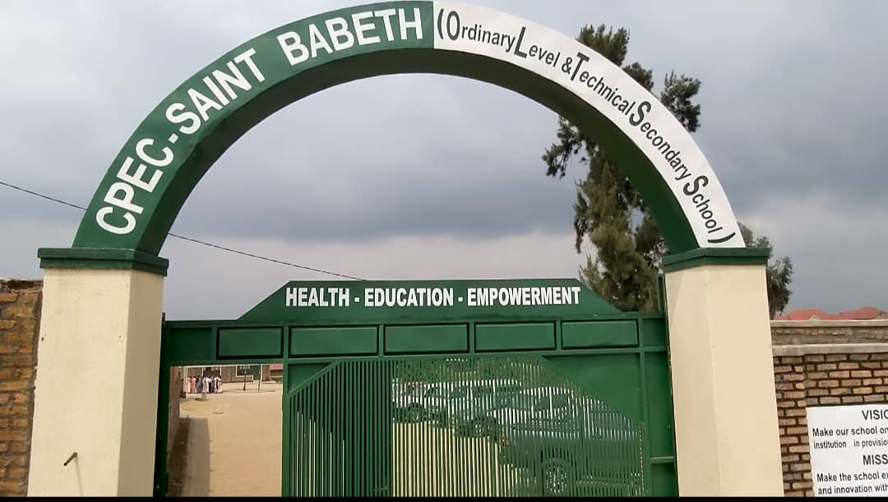

About CPEC Saint Babeth
We provide quality education in general studies,
software development, and multimedia training.
Founded in 2024 in Gicumbi District,
CPEC Saint Babeth
is a private educational institution
committed to brid
ing
the gap between theoretical knowledge and industry demands.
We offer Ordinary Level general education and advanced
technical diplomas in Software Development and Multimedia.
Our mission is to empower students with critical thinking,
digital creativity, and technical proficiency.
With small class sizes, experienced instructors,
and modern infrastructure in Gicumbi District,
we ensure personalized attention for every learner.